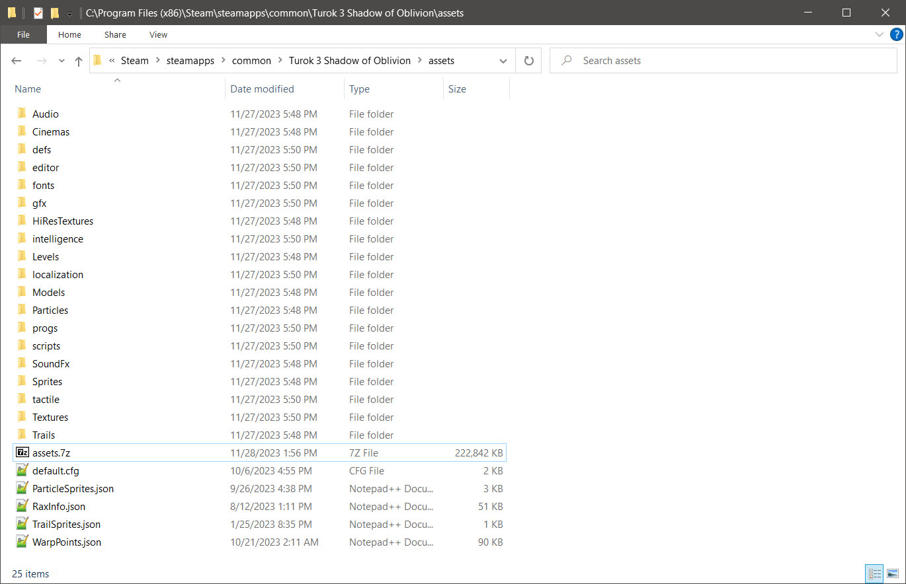
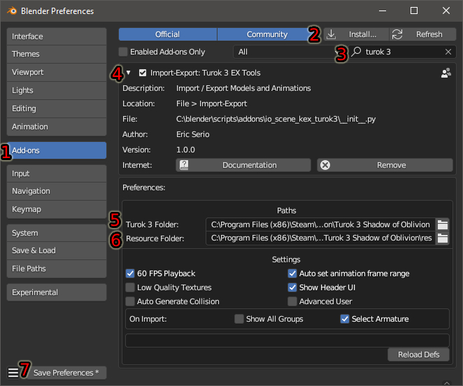
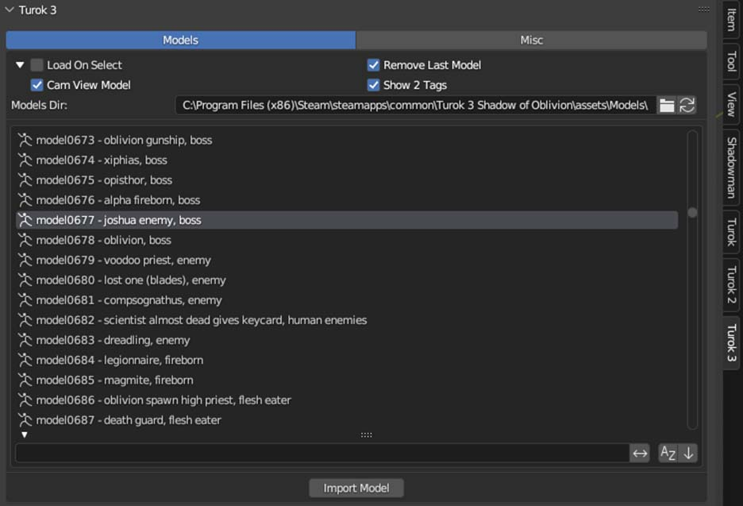

Turok 3 EX Tools v1.0.0 Documentation
By BehemothProgrammer
Installation

Extract the games assets from the "assets.7z" file
|
 |
Open Blender and navigate to Edit > Preferences
|
 |
Importing
|
 |
Exporting
Staticmeshes and Skinnedmeshes
|